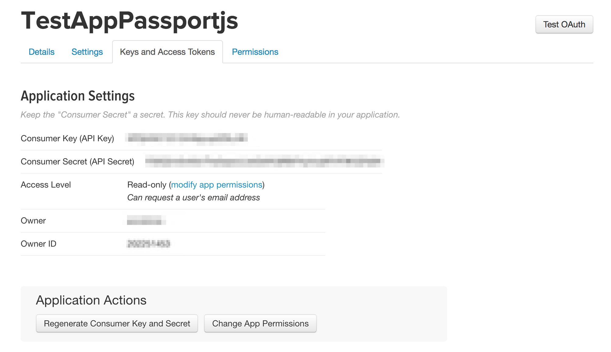

Аутентификация
Что это?
Что это?

Аутентификация
- проверка, что пользователь тот кем представился
- логин - кем представился
- пароль, код из смс, токен из письма, ... - подтверждение
Однофакторная аутентификация
Факторы
- фактор знания (пароль)
- фактор владения (телефон, смарт-карта, брелок)
- фактор свойста (биометрика)
1. Клиент запрашивает аутентификацию, присылая логин+пароль
2. Сервер ищёт пользователя по логину в БД
2.1 Если не находит - возвращает ошибку 401
3. Сервер сравнивает хэш присланного пароля с тем, что получен из БД
3.1 Если не совпадают - возвращает ошибку 401
4. Сервер создаёт токен
4.1 Для statefull-серверов - id сессии
4.2 Для stateless-серверов - подписанная информация пользователя (id, login, ...)
5. Сервер отдаём токен клиенту
5.1 cookie
5.2 body
5.3 cookie+body
6. Клиент сохраняет токен у себя
6.1 browser - cookies / localStorage
7. К каждому запросу клиент прикрепляет токен
7.1 cookie / прикрепляется браузером
7.2 header / Authorization: Bearer токен (пришло из OAuth 2.0)
7.3 body не используется т.к. GET не имеет тела
8. Сервер проверяет токен
8.1 statefull-сервер - подгружает сессию в запрос
8.2 stateless-сервер - проверяет подпись, подгружает пользователя в запрос
9. Авторизация
Cookies vs Headers
- куки проще поддерживать
- куки можно защитить от доступа из JS
- куки нельзя передавать между доменами
- куки вмещают только 4Кб
Нюансы
- возвращаемые ошибки - безопасность / UX
- stateless-сервер может иметь сессии, но клиент об этом не знает
- полезно: возвращать дополнительную информацию - имя, логин, срок действия токена
Нюансы
- можно: продлевать токен после успешного запроса
- комбинация http-only cookie и токена в хедере (защита от JS и CSRF) - guid в токен, хэш от guid в куки
Двухфакторная аутентификация
1. Клиент запрашивает аутентификацию, присылая логин+пароль
2. Сервер ищёт пользователя по логину в БД
2.1 Если не находит - возвращает ошибку 401
3. Сервер сравнивает хэш присланного пароля с тем, что получен из БД
3.1 Если не совпадают - возвращает ошибку 401
4. Сервер создаёт частичный короткоживущий токен
5. Сервер отдаёт частичный токен и запрашивает второй фактор
5.1 SMS / push-уведомление / звонок / ...
6. Клиент отсылает серверу второй фактор и токен
7. Сервер проверяет токен и второй фактор
7.1 Если не верны - возвращает ошибку 401
8. Сервер создаёт полноценный токен
9. Сервер отправляет токен клиенту
10. Клиент сохраняет токен у себя
11. К каждому запросу клиент прикрепляет токен
12. Сервер проверяет токен
12.1 statefull-сервер - подгружает сессию в запрос
12.2 stateless-сервер - проверяет подпись, подгружает пользователя в запрос
13. Авторизация
Single sign-on
SSO
- технология единого входа
- разные приложения авторизуются через одно специальное
- в вебе - приложения на разных доменах разделяют пользователя (habrahabr, microsoft, google)
- на одном домене, но с разными поддоменами можно разделить куки
1. Приложению habrahabr.ru требуется аутентификация
1.1 Перенаправление на приложение id.tmtm.ru
2. Аутентификация
2.1 Однофакторная, двухфакторная, ...
2.2 Сервер устанавливает cookie с токеном для id.tmtm.ru для повторных обращений
3. Перенаправление на приложение habrahabr.ru с передачей токена в query string
3.1 Сохранение в cookies / localStorage
OAuth
OAuth
- открытый протокол, текущий OAuth 2.0
- аутентификация через единого провайдера для несвязанных приложений
- пользователю не нужно раскрывать логин/пароль приложению
- провайдер также может предоставлять доступ к информации пользователя
- доступ к информации может быть разграничен
1. Клиент запрашивает аутентификацию
1.1 Перенаправление на провайдера
2. Клиент проходит аутентификацию у провайдера
3. Перенаправление на приложение с передачей токена в query string
OAuth vs SSO
- приложения не могут иметь прямого доступа к данным пользователя
- разделение доступа к данным пользователя
- валидность токена может подтверждаться как подписью, так и провайдером
- приложение может самостоятельно обновлять токен у провайдера
Сброс пароля через email
1. Клиент запрашивает сброс пароля прислав email
2. Сервер ищет пользователя в БД
2.1 Если не находит - может вернуть ошибку или успех
3. Сервер генерирует короткоживущий токен
3.1 Токен сохраняется в БД или кэш
4. Сервер отправляет письмо со ссылкой на форму сброса и токеном в query string
4.1 https://domain.xyz/reset-password.html?reset-token=ABCDEFG123456789
5. Клиент переходит по ссылке из письма
5.1 Заполняет форму
5.2 Отправляет на сервер
6. Сервер проверяет токен
6.1 Подпись?
6.2 Просрочен?
6.3 Совпадает с токеном в БД или кэше?
7. Сервер устанавливает новый пароль
7.1 Удаляет токен из БД или кэша
7.2 Хорошая идея запоминать время сброса пароля и не принимать токены выпущенные до этого момента
8. Сервер перенаправляет на страницу входа
8.1 Либо может сразу аутентифицировать пользователя
Хэширование
Хэширование
- преобразование строки произвольной длины в строку фиксированной
- скорость
- коллизии
Хэширование паролей
- никаких MD5 / SHA1 / SHA256
- обязательное соление - защита от радужных таблиц
- только математически медленные хэш-алгоритмы - PBKDF2, bcrypt
bcrypt
npm install bcryptjs
bcrypt.hash('password', 12, (err, hash) => {
// process result
});
bcrypt.compare('password', hash, (err, result) => {
// check result
});
JWT
JWT
- JSON Web Tokens
- открытый стандарт
- определяет формат токенов
- официальный сайт
JWT - Формат
заголовок.данные.подпись
JWT - Заголовок
- алгоритм
- тип токена (JWT)
- в формате base64
JWT - Данные
- полезная нагрузка
- в формате base64
JWT - Подпись
- криптографический хэш
- алгоритм(base64(заголовок) + '.' + base64(данные), ключ)
- в формате base64
JWT - Токены
- access_token
- иногда refresh_token
JWT - Refresh token
- используется когда access_token истёк
- отправляется на специальный url
- возвращается access_token + refresh_token
JWT - Refresh token
- при краже access_token им можно пользоваться ограниченное время
- при краже refresh_token он становится бесполезным при ре-логине
JWT - Node.js
npm install jsonwebtoken
JWT - Node.js
jwt.sign(payload, secretOrPrivateKey, options,
[callback])
/*
payload - строка, объект или буфер
secretOrPrivateKey - строка или буфер
callback - функция
options - объект
algorithms - массив допустимых алгоритмов
expiresIn - 60, "2 days", "10h", "7d"
-> https://github.com/zeit/ms
*/
JWT - Node.js
jwt.verify(token, secretOrPublicKey,
[options, callback])
/*
token - строка
secretOrPrivateKey - строка или буфер
callback - функция
options - объект
ignoreExpiration - true/false
clockTolerance - число секунд просрочки
*/
JWT - Node.js
const jwt = require('jsonwebtoken');
const token = jwt.sign({ id: 42 },
config['jwt-secret'],
{ expiresIn: config['jwt-expires'] });
jwt.verify(token, config['jwt-secret'],
(err, payload) => {
console.log(payload.id); // 42
});
Passport.js
Passport.js
- 500+ стратегий аутентификации
- OpenID и OAuth
- простота обработки удачных и неудачных попыток
- долговременные (persistent) сессии
- динамическая система прав
- не монтирует свои роуты
- можно разрабатывать свои стратегии
Passport.js
npm install passport
Passport.js
app.post('/login',
passport.authenticate('local'),
function(req, res) {
// If this function gets called,
// authentication was successful.
// `req.user` contains the authenticated user
res.redirect('/users/' + req.user.username);
});
Passport.js
const authRoutes = {
successRedirect: '/',
failureRedirect: '/login'
};
app.post('/login',
passport.authenticate('local', authRoutes));
Passport.js
app.get('/login', function(req, res, next) {
passport.authenticate('local',
(err, user, info) => {
...
})(req, res, next);
});
Passport.js
npm install passport-local
Passport.js
const passport = require('passport');
const LocalStrategy
= require('passport-local').Strategy;
app.use(passport.initialize());
Passport.js
const auth = (login, password, done) => {
User.findOne({login: login}, (err, user) =>
if (err) return done(err);
if (!user)
return done(null,false,{message: '...'});
if (!user.validPassword(password))
return done(null,false,{message: '...'});
return done(null, user);
);
};
passport.use(new LocalStrategy(auth));
Passport.js
npm install passport-facebook
npm install passport-twitter
npm install passport-google-oauth
npm install passport-vkontakte
npm install passport-github2
Passport.js - Twitter Auth
apps.twitter.com
Passport.js - Twitter Auth
apps.twitter.com Passport.js - Twitter Auth
npm i express
npm i express-session
npm i passport
npm i passport-twitter
npm i sequelize
npm i mysql2
npm i bluebird
Passport.js - Twitter Auth
{
"db": {
"host": "127.0.0.1",
"name": "db",
"user": "user",
"password": "password"
},
"twitter": {
"key": "TWITTER_KEY",
"secret": "TWITTER_SECRET",
"callback":
"http://127.0.0.1:3000/auth/twitter/callback"
}
}
Passport.js - Twitter Auth
const express = require('express');
const app = express();
const session = require('express-session');
const config = require('./config');
const Sequelize = require('sequelize');
const passport = require('passport');
const TwitterStrategy
= require('passport-twitter');
Passport.js - Twitter Auth
const options = {
host: config.db.host,
dialect: 'mysql',
logging: false,
define: { timestamps: false }
};
const sequelize = new Sequelize(
config.db.name,
config.db.user,
config.db.password,
options
);
Passport.js - Twitter Auth
const User = sequelize.define('users', {
id: {
type: Sequelize.INTEGER,
primaryKey: true,
autoIncrement: true
},
twitterId: Sequelize.STRING
});
Passport.js - Twitter Auth
passport.use(new TwitterStrategy({
consumerKey: config.twitter.key,
consumerSecret: config.twitter.secret,
callbackURL: config.twitter.callback
}, (token, tokenSecret, profile, cb) => {
User
.findOrCreate({
where: { twitterId: profile.id }
})
.then(function (user) {
cb(null, user[0].dataValues);
});
}
));
Passport.js - Twitter Auth
passport.serializeUser(
(user, done) => done(null, user)
);
passport.deserializeUser(
(user, done) => done(null, user)
);
app.use(session({
resave: false,
saveUninitialized: false,
secret: 'keyboard cat'
}));
app.use(passport.initialize());
app.use(passport.session());
Passport.js - Twitter Auth
app.get('/auth/twitter',
passport.authenticate('twitter'));
app.get('/auth/twitter/callback',
passport.authenticate(
'twitter',
{ failureRedirect: '/login' }
), (req, res) => {
res.redirect('/')
});
Passport.js - Twitter Auth
app.get('/', function (req, res) {
// req.isAuthenticated() or:
if (req.user) {
res.send('Hello #' + req.user.twitterId + '!');
} else {
res.send('Hello stranger!')
}
});
sequelize
.sync({ force: true })
.then(function() {
app.listen(3000, function () {
console.log('Running');
});
});